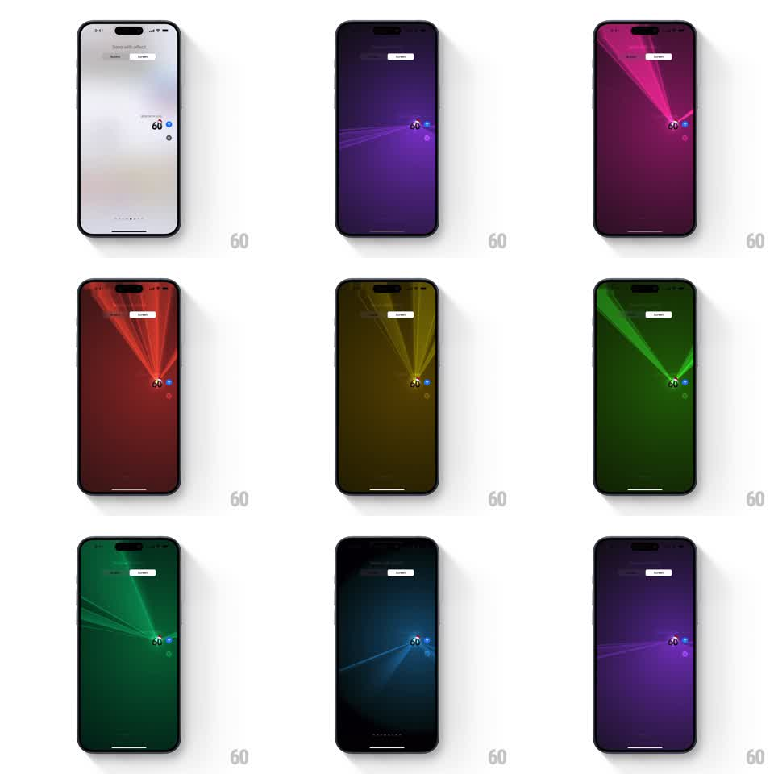

Media
Frame-by-frame

Rebuild this animation 1:1: Apple Messages' Lasers screen effect - the screen darkens and colored laser beams fan out from the sent bubble, sweeping across the stage while cycling through the spectrum.

Rebuild this animation 1:1: Apple Messages' Lasers screen effect - the screen darkens and colored laser beams fan out from the sent bubble, sweeping across the stage while cycling through the spectrum. ## Integration Integration: stack-agnostic spec - springs given as stiffness/damping, timed motions as duration + curve; map every value to your framework and animation library of choice. ## Scene The Messages "Send with effect" preview: the conversation dims to a dark stage, the sent bubble glowing at lower right. From the bubble's position, several thin laser beams shoot outward in a fan, swinging like concert lights while the whole scene's hue cycles through purple, magenta, red, yellow, green, teal, and blue. ## Motion spec Pattern: laser fan with hue cycle, ~7s total. - The screen dims over 300ms; a point emitter appears at the bubble. - 3 to 5 beams radiate from the emitter, each a thin glowing line with a soft bloom, fanning across the upper half of the screen. - The beams swing around the emitter (plus/minus 40 degrees) on offset sine phases (periods 1.2 to 2s), crossing and separating like a light show. - The scene hue rotates continuously (full spectrum cycle ~4s): background tint, beams, and bloom all shift together through purple to magenta to red to yellow to green to teal to blue. - Small glow motes flicker near the beam endpoints. The effect winds down: beams retract to the emitter (400ms) and the screen brightens. ## Calibration - All beams share one origin point at the bubble - the fan pivots there. - Hue shifts are smooth and continuous, never stepped. ## Reduced motion Static fan of beams, no swinging or hue cycle. ## Don't miss - The beams swing independently - they open and close like a fan, not a rigid star. - The bubble stays visible at the emitter point throughout.